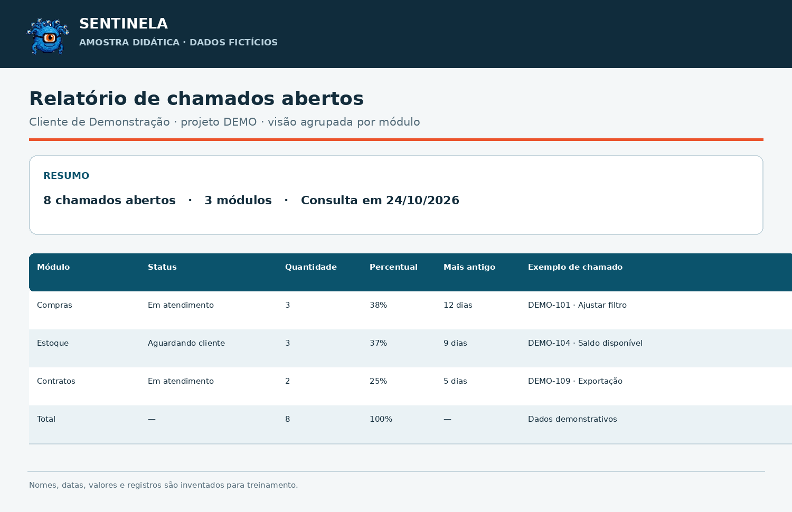
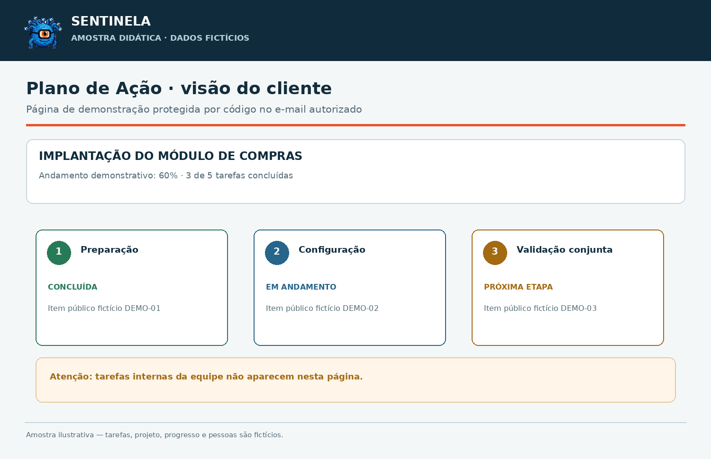
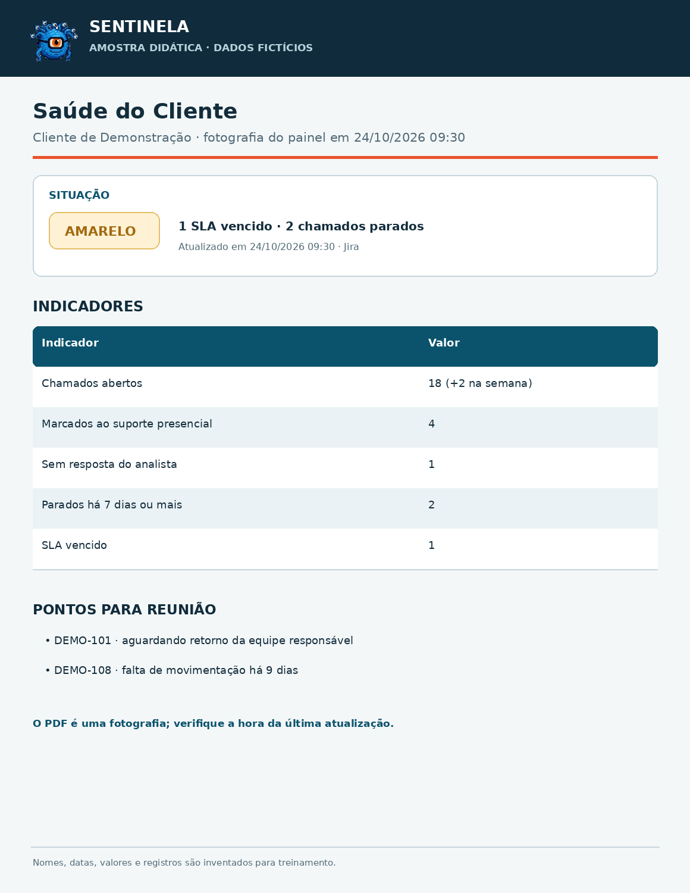

PROJETO PRINCIPAL
Sentinela
Registros, documentação e relatórios do suporte em um só lugar.
Minha participação: idealização e desenvolvimento da aplicação, com foco na organização dos registros e na geração de documentos para o suporte.
Qual era a dificuldade?
Reunir chamados, liberações e informações de acompanhamento para montar o relatório de cada cliente.
O que eu fiz?
Desenvolvi uma aplicação web para reunir esses registros, aplicar regras e modelos por cliente e organizar planos de ação.
Como ficou?
Relatórios padronizados e ações com responsáveis, prazos e status. A aplicação oferece exportação em PDF, Word, Excel e PowerPoint.
Veja exemplos das entregas
Amostras didáticas do projeto, com dados fictícios. Não são capturas de produção nem resultados medidos.

Ampliar relatório ↗
Ampliar plano ↗
Ampliar indicadores ↗